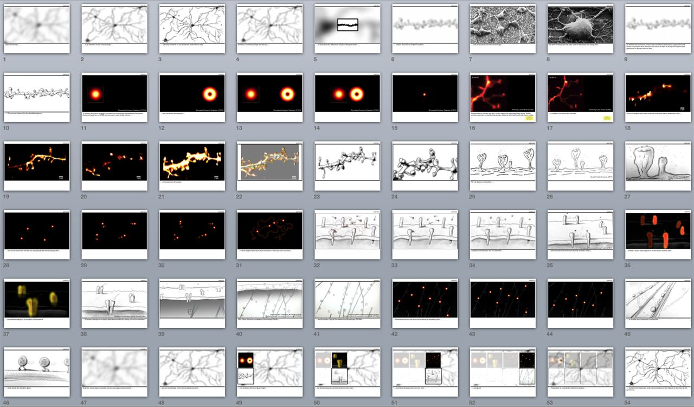
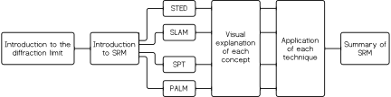
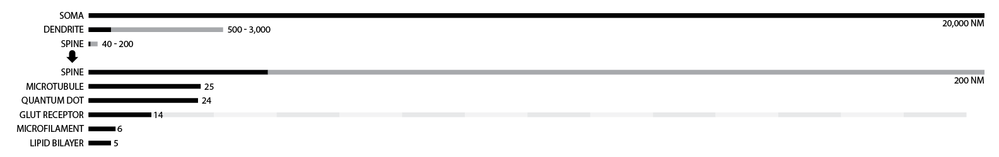
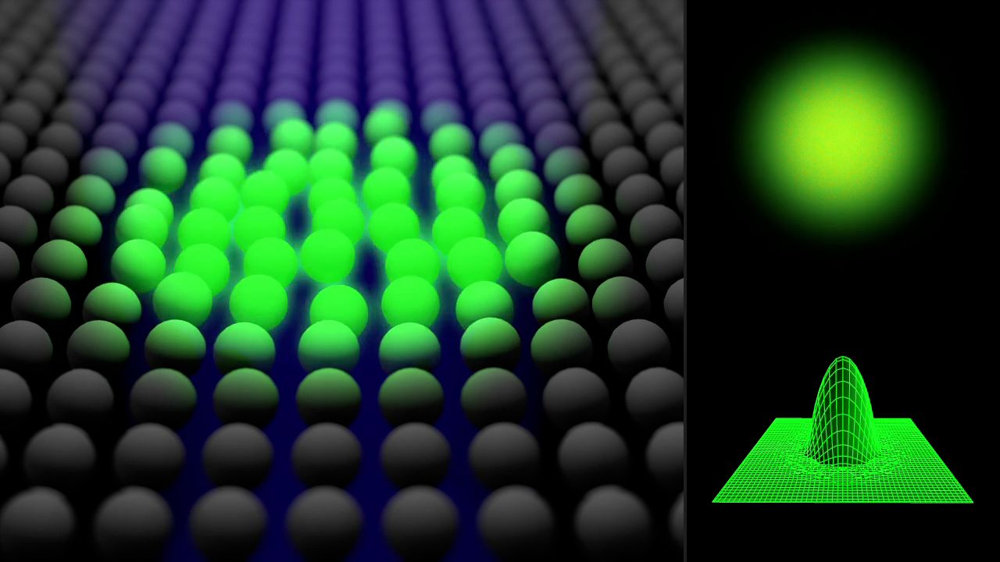
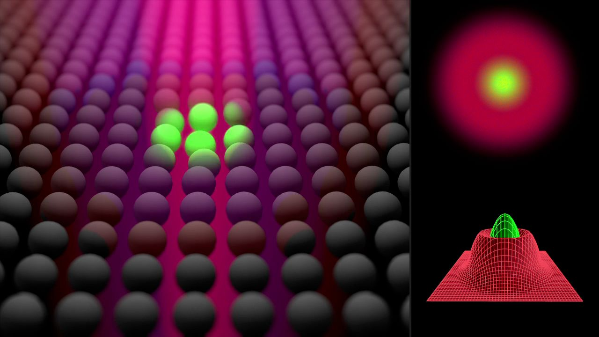
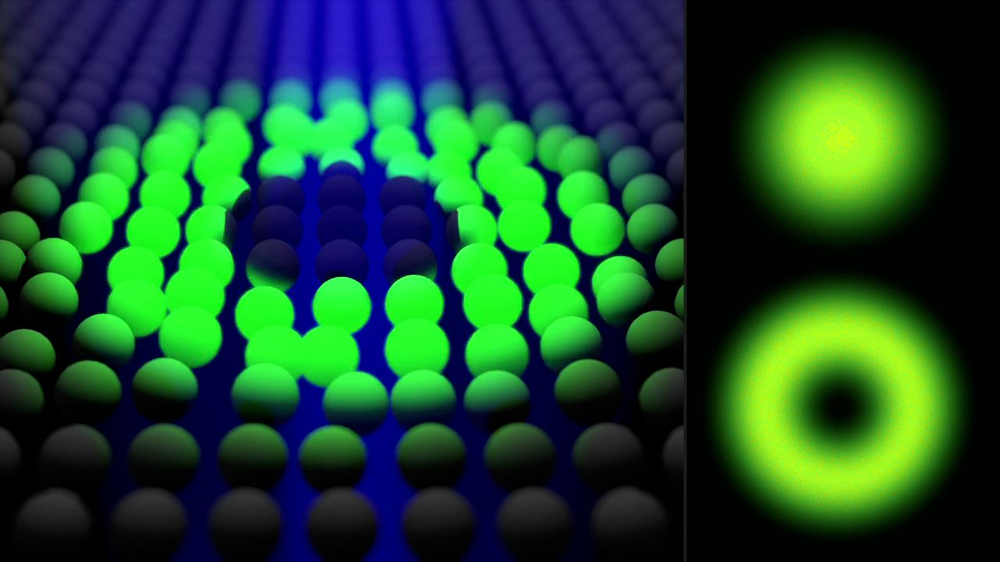

Summary
Beyond the Diffraction Barrier is a scientific 3D animation that visually explains key principles of several important super-resolution microscopy (SRM) techniques, including foundational concepts of fluorescence and laser scanning microscopy. Simultaneously, neurobiology is introduced at the mesoscale level, with an emphasis on relative size of cellular and sub-cellular structures. This is a Master's Research Project for the degree of Master of Science in Biomedical Communications.
Below is a 15-second trailer. Jump to the full 4-minute animation.
The project was awarded the Vesalius Trust Scholarship for Visual Communication in Health Sciences, and also funded by the CIHR Scholarship in NeuroPhysics: Setting new frontiers in neuroscience with material sciences and photonics.
I had the opportunity to wear many hats and acquire new technical skills for this project:
- Project management
- Literature review and research
- Project proposal and presentation
- Stakeholder meeting
- Narration script writing
- Storyboarding
- 3D modeling and animation
- Compositing
- Sound editing
Poster presented at AMI 2014 at Mayo Clinic in Rochester, MN. Download PDF.
Communication goals
The main goal is to successfully explain the basic principles of various SRM techniques:
- To create a 3D animation showing an overview of what can be seen with different SRM techniques to capture initial interests
- To show that SRM techniques can work together to reveal a complete picture of the dendritic spine, and thereby stimulate further research interests in SRM
The intended audience includes funding bodies, graduate students, neurobiologists, and biologists.
Super-resolution microscopy
The animation introduces four SRM techniques that can be grouped into two distinct sets of imaging strategies:
Laser scanning microscopy- Stimulated Emission Depletion (STED)
- Switching Laser Mode (SLAM)
- Single Particle Tracking (SPT)
- Photo-Activated Localization Microscopy (PALM)
Iterations
The direction of the project changed as new content emerged. I ended up with 11 revisions of the narration script when I was already halfway through with production. I learned to be flexible, while keeping the bigger communication picture of my animation and the deadline in mind.
An early version of the storyboard.
The final narrative flow can be summarized in the following chart. Difficult concepts can be delivered with straightforward storytelling.

Accuracy of scales
It was important to show cellular structures at the correct relative scale. To achieve this, I combed through relevant literature and put together a simple chart to aid the modeling process. With this chart, I was able to quickly tell how many receptors could fit on a dendritic spine, or how large a quantum dot was as it entered the synaptic cleft.

Simulations allow manipulation
Instead of using real data, I decided to recreate these images in 3D to achieve higher quality and ease of manipulation for storytelling. Below are some examples:
SEM neuron: 3D model and effects to demonstrate desiccation and fixation.
Single Particle Tracking (SPT): A confocal image shows quantum dots moving in and out of the cell.
Molecular visualization
All 3D molecular models were created and assembled with data acquired from RCSB Protein Data Bank. Below are some examples:
A fluorescent nanoparticle (quantum dot) binds to a neurotransmitter receptor.
Sparse green fluorescent protein (GFP) molecules along actin filaments are turned on and off.
Simplified explanations
Optical shaping of light excitation in STED and SLAM makes for a complicated concept, in addition to basic fluorescence concepts. To simplify this, instead of using realistic fluorescent molecules (fluorophores), I used simple spheres, in combination with sound effects, to explain both basic and advanced concepts.



Committee
BMC Supervisor: Marc Dryer, Hons BA, MSc, MScBMC
Content Supervisor: Yves De Koninck, PhD
Committee Member: Michael Corrin, BFA, BA, Hons BSc, MScBMC
Special thanks to
Paul De Koninck, PhD
Members of Yves De Koninck's and Paul De Koninck's research labs
Linda Wilson-Pauwels, AOCA, BScAAM, MEd, EdD
Jodie Jenkinson, BA, MScBMC, PhD
Nicholas Woolridge, BFA, BScBMC, MSc, CMI
Charles J. Lumsden, PhD
All BMC faculty and students
Joshua Lai for narration
Karyn Ho, PhD, Erin Kenzie, Jean Lin, and Man-San Ma for consultation and support.
This project was featured on Neurophotonics Centre, and Research2Reality. My tutorial for the opening scene was featured on LesterBanks. The inventors for some of these SRM techniques received the Nobel Prize in Chemistry in 2014.